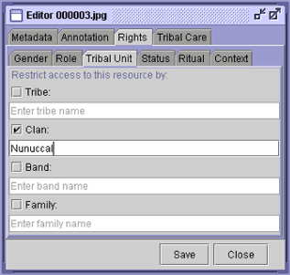
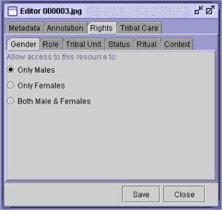
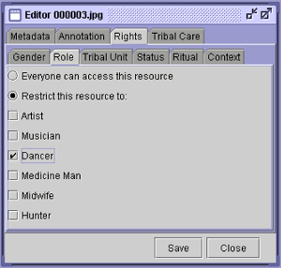
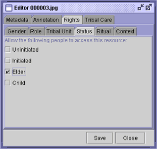
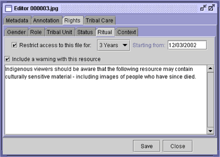
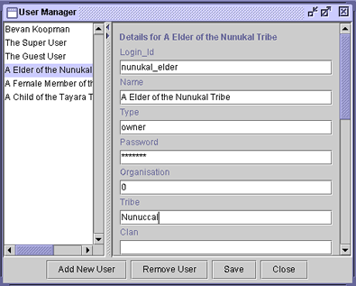

Archives & Museum Informatics
158 Lee Avenue
Toronto Ontario
M4E 2P3 Canada
ph: +1 416-691-2516
fx: +1 416-352-6025
info @ archimuse.com
www.archimuse.com
|
Search A&MI |
Join
our Mailing List.
Privacy.
Updated: March 8, 2003
Software Tools for Indigenous Knowledge Management
Jane Hunter, DSTC Pty Ltd; Bevan Koopman, University of Queensland, Australia; and Jane Sledge, Smithsonian National Museum of the American Indian, USA
Abstract
Indigenous communities are beginning to realize the potential benefits digital technologies can offer with regard to the documentation and preservation of their histories and cultures. However, they are also coming to understand the opportunities for knowledge misuse and misappropriation of their knowledge which may accompany digitization. In this paper we describe a set of open source software tools designed to enable indigenous communities to protect unique cultural knowledge and materials preserved through digitization. The software tools described here enable authorized members of communities to define and control the rights, accessibility and reuse of their digital resources; uphold traditional laws pertaining to secret/sacred knowledge or objects; prevent the misuse of indigenous heritage in culturally inappropriate or insensitive ways; ensure proper attribution to the traditional owners; and enable indigenous communities to describe their resources in their own words. Hopefully the deployment of such tools will contribute to the self-determination and empowerment of indigenous communities through the revitalization of their cultures and knowledge which colonization, western laws, western cultures and globalization have eroded.
Keywords: Indigenous Knowledge, Cultural Rights, Rights Management Software
Introduction
Using multimedia technologies, indigenous groups have been able to record and preserve significant aspects of their cultures including languages (First Voices), ceremonies, dances, songs, stories, symbols, design, artwork, tools, costumes, historical photographs, film, videos and audio tapes (NMAI, Barani, Diwurruwurru). Documentation of indigenous knowledge and history has become an extremely important tool to ensure the survival and self-sustainability of indigenous tribes and cultures, and to provide evidence of past injustices and to support claims of original ownership.
Although digitization is ideal for sharing, exchanging, educating and preserving indigenous cultures, it also creates ample opportunities for illicit access to and misuse of traditional knowledge. It is essential that traditional owners be able to define and control the rights and access to their resources, in order to uphold traditional laws; prevent the misuse of indigenous heritage in culturally inappropriate or insensitive ways; and receive proper compensation for their cultural and intellectual property. Finally, it is essential that indigenous communities be able to describe and contextualize their culturally and historically significant collections in their own words and from their own perspectives.
In this paper we have investigated the application of IT security mechanisms to the rights management of indigenous collections. In consultation with staff from the NMAI Cultural Resources Centre (National Museum), we have developed a set of low cost, simple-to-use and robust software tools designed to enable the description, annotation and rights management of collections of mixed-media digital and physical objects belonging to indigenous communities. We have also developed a search, retrieval and presentation interface which retrieves different result sets, depending on the user's profile, and aggregates the results automatically into coherent multimedia SMIL (Synchronized )) presentations.
Because of the enormous diversity of indigenous cultures, the system has been designed so that it can easily be customized to support the unique requirements of specific communities. The immediate future involves working closely with a small number of indigenous communities to refine the software to suit their specific requirements and projects. Eventually we hope to make the software downloadable from the Internet and freely available to indigenous communities for non-profit use and to provide training in its use and maintenance.
Background and Requirements
The work described here began with an investigation of the ability of current and evolving information technology tools for rights management (e.g., frameworks, markup languages, metadata models and standards) to support the unique needs of indigenous communities. We found that initiatives such as MPEG-21 (Multimedia Delivery Framework) (MPEG-21) and XrML (XrML) are primarily concerned with e-commerce and protecting the commercial rights of content owners. They are built on the premise of modern intellectual property law regimes and the notions of individual property ownership for a limited duration, ideas which are alien and detrimental to indigenous cultures. MPEG-21 and XrML do not support the specific requirements expressed by indigenous communities who need to protect indigenous knowledge or enforce tribal customary laws.
In an earlier paper (Hunter), specific extensions to XrML, in the form of customary constraints were developed to support the description of customary or traditional laws which commonly affect access. An analysis of tribal laws across Aboriginal and Native American communities revealed the following common factors or variables which may determine access to traditional knowledge:
- native/non-native restrictions;
- the user's membership in a particular clan or tribe;
- the user's status within the tribe (e.g., elder, initiate, child);
- the user's role within the tribe (e.g., dancer, artist, midwife, healer);
- the user's gender (male, female); o moon (menstrual cycle) restrictions; o pregnancy restrictions;
- the relationship of the viewer/user to the people, animals or objects depicted in the resource;
- the death of people recorded in a resource;
- human remains access restrictions - no access should be provided to images of human remains, or specifics about the disposition of human remains repatriated to tribal communities;
- the context in which the resource will be reused or reproduced.
Staff at the NMAI CRC also expressed the need to be able to document traditional care information associated with culturally significant physical artefacts in their custody. Kristina Dunman has described the meaning and importance of traditional care of American Indian artefacts in (Dunman). Jim Pepper Henry (Repatriation Program Manager at the NMAI) also provided the following list of traditional care constraints frequently requested by American Indian tribal representatives regarding the storage and handling of objects:
- directional orientation;
- segregation from other objects or other tribes' materials;
- storage on higher shelves, use of wooden shelving;
- cover from view with cloth or muslin;
- ceremonial feeding/dusting with corn pollen and/or other materials;
- cleansing with smoke (cedar, sage, tobacco, sweetgrass etc.);
- freezing restriction;
- low oxygen restriction (no CO2 bubble or covering with plastic or other non permeable materials);
- sacred/ceremonial bundle dis-assemblage restriction (bundle to remain intact and unopened);
- ceremonial pipe assemblage restriction (bowl and stem should be housed disconnected).
Similar traditional care recommendations also apply to culturally sensitive artefacts belonging to Aboriginal and Torres Strait Islander communitiesbut held in museums, archives, cultural centres and keeping places.
The software should also enable the traditional owners to describe, contextualize and annotate resources in their own words, their own languages and from their own perspectives. The importance and value associated with enabling spoken annotations (in addition to textual annotations) was multi-faceted:
- Spoken annotation tools reinforce and support the oral tradition which is so strong in many indigenous cultures;
- Spoken annotations are an easier and more natural interface for user input than keyboards, particularly for communities with low computer literacy and poor keyboard skills;
- Spoken annotations represent new language resources which can be used to help preserve threatened languages;
- Photos and videos can act as a trigger for the Indigenous elders to record their stories as spoken annotations to the visual resources.
In addition, users should be able to view or listen to associated annotations which are clearly attributed to individuals. This approach supports the unambiguous documentation of all views/perspectives - even if they are different or contradictory. The software explicitly displays "who said what and when" rather than displaying only the view of a Museum Curator which may have been deduced from a number of different sources of varying reliability.
Figure 1 below illustrates how we envisage the software being used to assist with the protection, preservation and repatriation of indigenous knowledge and artefacts which are being shared, exchanged or returned from museums, archives, private anthropologists' collections and cultural institutions back to their original owners. (N.B. We are not considering the repatriation of human remains within the scope of this project.)
No single approach is applicable to the repatriation of indigenous information, knowledge and/or artefacts. For example, Australian law differs from US law, and additionally, each tribal community will have its own unique needs and requests. In the United States, while the Native American Graves Protection and Repatriation Act (NAGPRA) specifies the types of objects and sites to be protected and/or repatriated, it is expected that some tribal communities will want access to the records of all objects in museum collections associated with their community and be satisfied with digital surrogates and access to physical objects when requested. Going beyond the requirements of NAGPRA, the NMAI has established a Culturally Sensitive Collections Care Program to respond to areas of concern of Native peoples with regard to the maintenance, presentation, and disposition of sensitive materials and information in the collections of the museum. Jim Pepper Henry, Assistant Director for Community Services at NMAI says:
This Program is to be implemented with regard to the wishes and concerns of indigenous communities and traditional leaders and structured within the boundaries of the obvious and reasonable limitations of the institution. The basis for this program is formed through consultations with official tribal representatives, tribal elders and traditional leaders, and museum staff with respect to museum policies and procedures, and US federal legislation including the National Museum of the American Indian Act, American Indian Religious Freedom Act (AIRFA), Native American Graves Protection and Repatriation Act (NAGPRA), and the Collections Policy of the National Museum of the American Indian. The Program Committee is cognizant of the fact that it is operating within the constraints of a national museum, and acknowledges that in some instances, dependant upon the beliefs and feelings of the Native community concerned, the proposed implementation of sensitive collections care practices within the museum setting may be deemed inappropriate or presumptuous. In such circumstances, the Committee will endeavour to abide by any alternative direction offered by the concerned Native group.
The aim of the software described here is to support such a Program.
Figure 1 — Envisaged Software Usage Scenario
The envisaged usage and application of the software as described above, introduced certain requirements and design constraints which needed to be satisfied. These included:
- Security mechanisms - because of the sacred/secret nature of the content with which we are dealing, it is essential that the IT security mechanisms which are employed be impenetrable and reliable;
- Simple user interfaces - many of the potential users of this system will have low computer literacy, so simple intuitive user-friendly interfaces are essential;
- Robustness - the system must be able to stand up to the rigours of unexpected input by users with little prior computing experience;
- Low cost - in order to make the software open source and accessible to indigenous and grassroots communities, it must be built as inexpensively as possible, using tools which are ideally free;
- Interoperability - the software tools should be built on international standards - Dublin Core (Dublin), CIDOC CRM (CIDOC), MPEG-21 (MGEP-21), XrML (XrML)- in order to ensure maximum interoperability between disparate databases;
- Portability - it should be able to run on a range of platforms and operating systems. Java (JDBC, JSP), XML and SMIL have been used as the software development environment to ensure transparent portability across platforms;
- Flexibility - The customary laws and intellectual property needs of traditional knowledge holders vary enormously among indigenous communities throughout the world. Quite often the views within a single clan can vary significantly, and they may also vary over time. Our system attempts to support the common notions associated with traditional laws within Indigenous communities. In addition, we have provided Schema editing tools in order to provide maximum flexibility and to enable easy customization of the software.
- Scalability - the size of indigenous collections (particularly within cultural institutions) can reach hundreds of thousands of items. The software should be capable of efficiently enabling metadata/constraints to be applied across large sets of resources, individual resources or regions/segments within resources for either individual users or user-groups.
Although a number of other projects have investigated the application of information technology tools to the protection and management of indigenous collections according to customary laws (Ara, Sullivan, Digital, Special), they have not approached the problem using international metadata standards nor developed generic yet flexible systems which are capable of supporting indigenous communities globally, but easily customized to support the particular local customs.
The remainder of this paper describes the software which has been developed to support the requirements specified above. h1 class = SubHeader>System Architecture and Components
This section describes the architecture of the software system, its separate components and the overall process/workflow described in Figure 1.
The system consists of three major components:
- The Metadata Editor/Generator;
- The Database;
- The Search, Retrieval and Presentation Interface.
Figure 2 illustrates the interfaces to these components and the technologies used to build them and integrate them into a single coherent system.
Figure 2 — System Architecture and Workflow
The Metadata Editor/Generator
This component of the system enables users to input the descriptive, rights and tribal care metadata associated with the objects (either physical or digital) and to attach spoken or written annotations to specific objects.
Users require a login ID and password to run this software component and, depending on their privileges/user profile, may only be permitted access to certain functionality.
Figure 3 illustrates the three types of metadata which can be input and the users/groups who we envisage will provide them.
Figure 3 - Metadata Types and Sources
The Descriptive Metadata consists of Dublin Core [Dublin] plus some additional optional elements from the CIDOC CRM [CIDOC] for describing physical museum objects, such as material, technique and dimensions. Figure 4 shows the user interface for inputting or editing descriptive metadata. Alternatively, some or all of the descriptive metadata could be acquired from existing museum/library/archive database cataloguing information.
Figure 4 - Descriptive Metadata Input
The Rights Metadata will be provided by the traditional owners or elders of the indigenous community to whom the resource belongs. Only those users with the required access privileges will be able to input or edit the rights metadata. Support has been provided to enable the definition and application of restrictions based on:
- the user's membership of a particular clan or tribe;
- the user's status within the tribe;
- the user's role within the tribe;
- the user's gender;
- the relationship of the user to people, animals or objects depicted in the resource;
- the death of people recorded in a resource;
- the context in which the resource will be reused or reproduced.
Figures 5a, 5b, 5c, 5d, and 5e show the user interface for defining access restrictions which depend on the user’s tribal affiliation, gender, role and status.

Figure 5 - User Interfaces for Restricting Access According to Customary Laws
In addition to the descriptive and rights metadata, annotation tools which enable indigenous communities to describe resources in their own words have been provided. Authorized users can input, record and attach either textual or spoken annotations to specific objects or resources. The ability to enter spoken annotations is especially useful and valuable - it provides a natural user interface which supports the oral tradition and allows users to express their stories in their own words and languages. It also acts as a trigger for generating new knowledge and enhancing existing knowledge. Figure 6, below, illustrates the annotation interface. Users can also browse the list of clearly attributed annotations and view/listen to who said what and when about a particular resource.
Figure 6 — Spoken Annotation Input
In response to a request from both museum staff and representatives of Indigenous communities, we have also added support for the specification of Tribal Care recommendations. The Tribal Care metadata tool enables Indigenous communities to define the ways in which culturally significant or sensitive physical artefacts should be treated - ways which are acceptable to the cultures represented. Elders are able to define particular spatial orientation, storage and preservation recommendations to ensure the respectful tribal care of physical artefacts. While the actual implementation of traditional care specifications may be difficult, many museums are attempting to integrate Indigenous beliefs and requests into museum practices, and our software will hopefully facilitate this process.
Figure 7 - Tribal Care Specifications
Where possible, the specified access restrictions will be enforced by matching them against the profile of the user. Every user of the system requires a login ID and password. When being allocated a user ID, users will also need to provide supporting documentation to prove their claims of tribal affiliation, status, etc.
The User Manager software component illustrated in Figure 8 allows the systems administrator to add or remove users and to edit their profiles. Authorized elders will be able to enter the rights constraints, and authorized users will be able to attach annotations. Hence the software affects not only what resources users can access and view but also what metadata tools they can access and hence what metadata they can enter.
[
Figure 8 - User Manager
Because of the enormous diversity of indigenous cultures, the system has been designed so that it can easily be customized to support the unique requirements of different communities. Customization is carried out through the SchemaManager tool. Community elders can add new constraints, or remove or refine existing constraints, depending on the traditional laws of their community. An XML Schema [XML] is saved to reflect their particular metadata requirements and rights constraints, and the user interface is then generated from the saved/selected schema. Figure 9 illustrates the Schema Manager user interface.
Figure 9 - Schema Manager
The Database
Saved metadata is stored in relational tables in a MySQL database which is connected through a JDBC (Java Database Connectivity) API [Java]. It is envisaged that, because of the sensitivity of the data, this database will not be accessible through the Internet. It will be stored on CD-ROM or the hard disk of a stand-alone supervised workstation, within a cultural centre, keeping place or supervised building (such as a library or a school) within the community.
In addition to the metadata which is explicitly saved to the database through the user interface, meta-metadata is also recorded - all changes to the metadata, who was responsible, and the date/time of the changes are recorded within the database. This represents an important component of the system's built-in security framework.
The Search, Retrieval and Presentation Interface
A search, browse and retrieval interface to the collection was built using standard Web Browser technologies (Internet Explorer, Netscape) for the user interface. The advantages of using standard Browsers for the search interface are their familiarity and widespread availability and the lack of re-engineering necessary should collections eventually be disseminated over wider networks. To access the collection, users must have been allocated a login ID and password and a user profile. The steps below illustrate the typical procedure which users would follow when searching and browsing an indigenous collection:
- A user logs onto the system using a secure password. Associated with each user is an authenticated user profile which includes information such as tribal/western names, native/non-native heritage, tribal/clan membership, gender, status, role, etc.;
- The user performs a search on a particular topic, e.g., dance; (See Figure 10);
- The software then searches the title, subject, and description metadata associated with each object in the collection, for the specified search term (e.g., dance);
- For those objects whose metadata matches the search term, the software compares the objects' rights constraints with the user's profile to determine whether or not the user is permitted to access this object. If so then this object will be added to the result set;
- The list of results/objects which match the search term and which the user is permitted to access is then displayed - along with any rights constraints, which appear as icons (see Figure 11);
- The user can click on individual objects to view/play the object and to view the metadata details and any annotations;
- The users can select objects of particular interest and add them to a personal collection;
- The software automatically aggregates those mixed-media objects selected by the user (images, audio clips, video clips, text), and dynamically generates a SMIL (Synchronized Multimedia Integration Language) [Simulated] presentation which is delivered to the user (see Figure 12);
Figure 10 - Search Interface
Figure 11 - Search Results
Figure 12 - Multimedia Presentation of Results
Future Work and Conclusions
In this paper we have described a software system developed as a result of consultation with representatives from Indigenous communities and staff from museums, archives, libraries and cultural centres in both Australia and North America. However at this stage the software remains relatively untested within real world applications or real communities. Hence the immediate future involves working closely with a small number of indigenous communities to determine:
- whether the software can satisfy the unique requirements of particular Indigenous communities for the management of their culturally sensitive collections or whether further extensions/refinements/modifications will be required;
- whether the dynamic political, social and trust issues (e.g., lack of agreement on access rules, validation of individual claims of authority, authorizations within a tribe or community) are greater than the technical problems associated with enforcing them;
- the proper procedures required to enable the successful and beneficial application of the software to the preservation, description, protection and annotation of indigenous cultural collections by the traditional owners;
- the types of scenarios, situations, collections and communities to which the software is most suited and of maximum benefit;
- whether additional security mechanisms such as XML Encryption [XML Encryption], XML Digital Signatures [XML Digital], SAML (Security Assertion Markup Language) [Security], SSL (Secure Sockets Layer) [Secure Socket] and watermarking techniques, would be applicable and could be trusted to ensure secure access to and transfer of sacred/secret data over networks between distributed remote locations and a common centralized repository.
Given a positive response from the community trials, we plan to make the software freely available and downloadable from the Internet for non-profit use by indigenous communities and to provide training in the usage, refinement and maintenance of the system to interested groups.
Acknowledgements
The work described in this paper has been carried out as part of a Queensland Smithsonian fellowship, funded by the Queensland Government and a collaboration between the Distributed Systems Technology Centre and the Smithsonian's National Museum of the American Indian Cultural Resources Centre (NMAI CRC). Thanks also to Angelina Russo and students from UQ’s Information Environments program for their Web search interface design.
References
Ara Irititja Archival Project, South Australia, http://waru.org/arairititja/
Barani - Indigenous History of Sydney City, <http://www.cityofsydney.nsw.gov.au/barani/main.html>
CIDOC Conceptual Reference Model, <http://cidoc.ics.forth.gr>
Digital Collectives in Indigenous Cultures and Communities Meeting, Hilo, Hawaii, August 10-12, 2001, <http://si.umich.edu/pep/dc/meeting/meeting.htm>
Diwurruwurru - "Our Message Stick to the World", <http://arts.deakin.edu.au/Diwurruwurru>
Dublin Core Metadata Initiative, <http://www.dublincore.org>
First Voices Project, <http://www.firstvoices.com>
Hunter, J. (2002). Rights Markup Extensions for the Protection of Indigenous Knowledge, 11th International World Wide Web Conference, Honolulu, Hawaii, May 2002, <http://archive.dstc.edu.au/IRM_project/paper.pdf>
Java Database Connectivity(JDBC), <http://java.sun.com/products/jdbc/>
MPEG-21 Overview, <http://mpeg.telecomitalialab.com/standards/mpeg-21/mpeg-21.htm>
National Museum of the American Indian (NMAI), <http://www.nmai.si.edu/>
NMAI Exhibits online, <http://www.conexus.si.edu>
Security Assertions Markup Language (SAML), <http://www.saml.org/>
Secure Socket Layer (SSL), <http://wp.netscape.com/eng/ssl3/>
Special Issue on Digital Technology and Indigenous Communities, D-Lib Magazine, March 2002, <http://www.dlib.org/dlib/march02/03contents.html>
Sullivan, R. (2002). Indigenous Cultural and Intellectual Property Rights - A Digital Library Context, D-Lib Magazine May 2002 Volume 8 Number 5 http://www.dlib.org/dlib/may02/sullivan/05sullivan.html
Synchronized Multimedia Integration Language (SMIL), W3C Recommendation, 07 August 2001, <http://www.w3.org/TR/smil20/>
XML Digital Syntax and Processing, W3C Recommendation, 14 February 2002, <http://www.w3c.org/xmldsig-core>
XML Schema Language, W3C Recommendation, 02 May 2001, <http://www.w3.org/XML/Schema>
XrML, eXtensible rights Markup Language, <http://www.xrml.org>